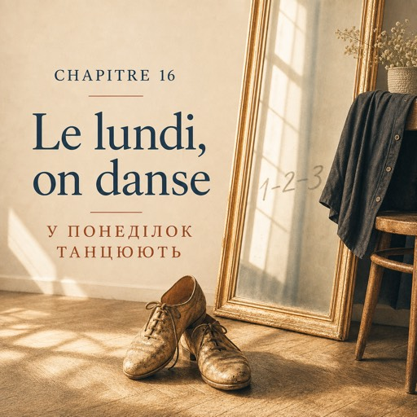

0:00
3:08
Натисніть речення, щоб почути його окремо.
Щоб слухати з підсвіткою — відкрийте сторінку в браузері.
Le lundi 6 octobre — понеділок, 6 жовтня
Le mardi et le jeudi, c'est le cours de français.
Вівторок і четвер — це курси французької.
Alors la danse, c'est le lundi et le mercredi.
Тому танці — це понеділок і середа.
La salle est rue de Paris, à dix minutes de chez elle.
Зала на вулиці Парі, за десять хвилин від дому.
Un parquet, un grand miroir, des chaises contre le mur.
Паркет, велике дзеркало, стільці попід стіною.
Ça sent le bois et la poussière chaude.
Пахне деревом і теплим пилом.
À la porte, une femme écrit les noms. Natalia dit un mot.
Біля дверей жінка записує імена. Наталя каже одне слово.
— Bonsoir.
— Добрий вечір.
Quinze personnes. Personne ne demande d'où elle vient. Personne ne demande rien.
П'ятнадцятеро людей. Ніхто не питає, звідки вона. Ніхто взагалі нічого не питає.
Bruno arrive à huit heures pile.
Бруно приходить рівно о восьмій.
Cinquante ans, chemise noire, une voix qui remplit la salle.
П'ятдесят років, чорна сорочка, голос, який заповнює всю залу.
— Bonsoir tout le monde ! En ligne, s'il vous plaît ! Un mètre entre vous !
— Добрий вечір усім! У лінію, будь ласка! Метр між вами!
Natalia ne connaît pas « en ligne ».
Наталя не знає, що таке « en ligne ».
Elle regarde les autres. Les autres bougent. Elle bouge aussi. C'est fait.
Вона дивиться на інших. Інші рухаються. Вона рухається теж. Готово.
— Ce soir, pas de couples. Ce soir, on apprend les pas.
— Сьогодні без пар. Сьогодні вчимо кроки.
— Écoutez la musique. Ne comptez pas dans votre tête : comptez avec les pieds.
— Слухайте музику. Не рахуйте в голові — рахуйте ногами.
— Regardez-moi. Je suis derrière vous, mais je suis devant vous dans le miroir.
— Дивіться на мене. Я позаду вас, але в дзеркалі я перед вами.
La musique commence.
Музика починається.
— Un-deux-trois. Un-deux-trois. Pied gauche d'abord. Toujours le gauche.
— Раз-два-три. Раз-два-три. Спершу ліва нога. Завжди ліва.
— À droite. À gauche. En avant, en arrière. Encore.
— Праворуч. Ліворуч. Уперед, назад. Ще раз.
Au cours de français, il y a toujours une demi-seconde.
На курсах французької завжди є ця півсекунда.
Elle écoute, elle traduit, elle ouvre la bouche — et la question est déjà partie.
Вона слухає, перекладає, розтуляє рота — а питання вже поїхало далі.
Ici, il n'y a pas de demi-seconde.
Тут півсекунди немає.
Bruno dit « à droite », et le pied est déjà à droite.
Бруно каже « à droite » — і нога вже праворуч.
— Les épaules ! Baissez les épaules ! On n'est pas au bureau !
— Плечі! Опустіть плечі! Ми не в офісі!
— La tête droite. Regardez devant vous, pas vos pieds. Vos pieds savent.
— Голову прямо. Дивіться перед собою, а не на ноги. Ноги самі знають.
— Plus vite ! Plus vite ! ... Non. Moins vite. Beaucoup moins vite.
— Швидше! Швидше! …Ні. Повільніше. Набагато повільніше.
Il coupe la musique.
Він вимикає музику.
— On recommence, dit Bruno.
— Починаємо спочатку, — каже Бруно.
On recommence six fois.
Починають спочатку шість разів.
Un monsieur, devant elle, tourne à gauche quand toute la salle tourne à droite.
Якийсь чоловік перед нею повертає ліворуч, коли вся зала повертає праворуч.
— Monsieur ! À droite ! L'autre droite !
— Мсьє! Праворуч! Інше праворуч!
La salle rit. Le monsieur rit aussi.
Зала сміється. Чоловік сміється теж.
Natalia rit une demi-seconde après les autres, mais elle rit.
Наталя сміється на півсекунди пізніше за всіх, але сміється.
À neuf heures et demie, la musique s'arrête pour de bon.
О пів на десяту музика замовкає остаточно.
— C'est bien. Mercredi, on danse à deux.
— Добре. У середу танцюємо в парах.
— Mercredi, il y a une main sur une épaule, et c'est tout de suite plus difficile.
— У середу з'являється рука на плечі — і одразу стає значно важче.
Il passe au fond de la salle et il s'arrête devant elle.
Він іде в глиб зали й зупиняється перед нею.
— Vous, là. Vous avez déjà dansé ?
— Ви, отам. Ви вже колись танцювали?
— Ah bon. C'est quoi, votre nom ?
— Он як. Як вас звати?
— Bien, Nathalie. Lundi et mercredi. À mercredi.
— Добре, Наталі. Понеділок і середа. До середи.
Dehors, la rue de Paris est presque vide.
Надворі вулиця Парі майже порожня.
Il fait froid pour un mois d'octobre.
Як на жовтень, холодно.
Chez elle, cinq étages et pas d'ascenseur.
Удома п'ять поверхів і жодного ліфта.
Elle monte en comptant. Un-deux-trois. Un-deux-trois.
Вона піднімається й рахує. Раз-два-три. Раз-два-три.
Elle a dit trois mots ce soir : bonsoir, non, Nathalie.
Сьогодні вона сказала три слова: добрий вечір, ні, Наталі.
Et elle a tout compris.
І зрозуміла все.